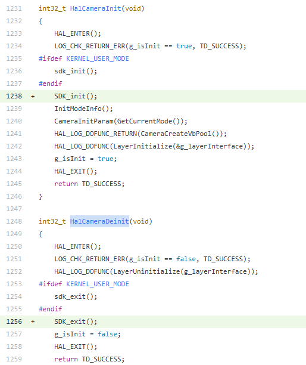
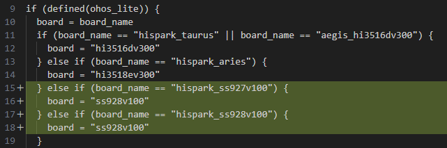
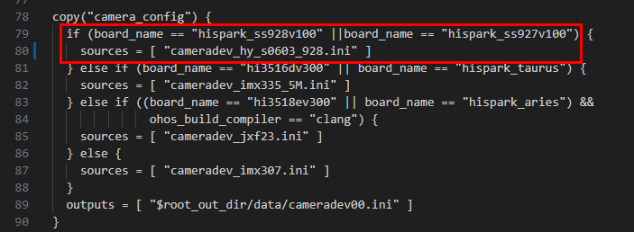

OpenHarmony Small 系统集成移植案例
前言
本文章是基于视觉Hi3403V100芯片配套的hispark_aifly开发板，进行OpenHarmony小型系统相关功能的移植；主要包括解决方案集成，产品配置添加，内核移植适配、编译，XTS认证，HUKS组件增强特性，图形增强特性，媒体增强特性的适配案例总结。
本文档主要适用于视觉OpenHarmony Small系统升级的操作人员。操作人员必须具备以下经验和技能：
- 熟悉OpenHarmony源码编译构建。
- 熟悉视觉类芯片SDK版本。
在本文中可能出现下列标志，它们所代表的含义如下。


开发板device_board_hisilicon适配
本目录用于存放hispark_aifly的开发板相关内容，支持运行小型系统的开发板；介绍了单板、内核、工具链和编译器等信息。
device/board/hisilicon/hispark_aifly/
├── BUILD.gn
├── kernel
│ ├── BUILD.gn #编译框架GN文件
│ ├── batch_sign_ko.sh #ko签名脚本（使用内核编译生成的签名密钥对ko进行签名）
│ ├── kernel.mk #用于配置内核编译交叉工具链、源码环境、defconfig等信息
│ └── kernel_module_build.sh #内核编译入口shell脚本文件
├── linux
│ ├── config.gni #用于描述这个产品样例所使用的单板、内核、工具链、编译器等信息
│ └── LICENSE
├── ohos.build #定义一个device_hispark_aifly子系统，该设备下module_list字段列出了设备需要加载的模块
└── README_zh.md
OpenHarmony上Hi3403V100的内核编译代码模型
图 1 OpenHarmony上Hi3403V100内核编译代码模型

OpenHarmony的内核编译
OpenHarmony的Linux内核是基于开源Linux内核LTS 5.10y/6.6.y分支上，回合CVE补丁和OpenHarmony特性。若要支持芯片的内核特性，则需要从开源Linux内核LTS上对应分支上，选取同一个版本或者版本号相近的内核源码。本系统芯片的内核选型和OpenHarmony的Linux内核相同的linux-6.6.86版本，可以直接将SDK提供的linux-6.6.86.patch补丁文件直接应用于鸿蒙内核源码上，解决代码冲突即可。
kernel的编译入口在device/board/hisilicon/hispark_aifly/kernel/BUILD.gn。为提高调试kernel的效率，可将command命令打印出来、在当前目录下执行可单独编译内核。
build_ext_component("build_kernel") {
no_default_deps = true
exec_path = rebase_path(".", root_build_dir)
outdir = rebase_path("$root_out_dir")
build_type = "small"
product_path_rebase = rebase_path(product_path, ohos_root_path)
command = "chmod +x ./kernel_module_build.sh && ./kernel_module_build.sh ${outdir} ${build_type} ${target_cpu} ${product_path_rebase} ${board_name} ${linux_kernel_version}"
}
内核编译的详细流程配置在device/board/hisilicon/hispark_aifly/kernel/kernel.mk
说明：
- 当内核编译时，会将kernel/linux/linux-6.6的源代码拷贝至
$(OUT_DIR)/kernel/${KERNEL_VERSION}，再进行打补丁的动作- 使用工程的全量编译命令，编译生成uImage内核镜像 ./build.sh --product-name=ipcamera_hispark_aifly_linux --ccache --no-prebuilt-sdk --build-target build_kernel 也可以选择指定编译的内核版本，默认以config.json文件配置为准 --gn-args linux_kernel_version="linux-6.6"
- 本文基于Linux-6.6内核版本，不支持Linux-5.10
芯片device_soc_hisilicon适配
本目录用于存放芯片相关内容，包含HDI实现（display、huks、media、middleware）、芯片SDK（用户态库、头文件、驱动源码、MPP Sample等）
device/soc/hisilicon
├── common
│ ├── hal
│ │ ├── display #南向显示适配实现，包含FrameBuffer和DRM显示框架适配
│ │ ├── huks #南向安全组件的硬件密钥加解密接口实现
│ │ ├── media #媒体适配（audio、camera、codec等）
│ │ ├── middleware #媒体中间件
│ │ │ └── source #支持Hi3403V100和Hi3519AV200的Clang-musl工具链适配
│ │ └── ...
│ └── platform
├── hi3403v100
│ ├── kernel
│ │ └── arch #芯片的dts文件
│ ├── NOTICE
│ ├── README_zh.md
│ ├── sdk_linux
│ │ ├── BUILD.gn
│ │ ├── build.sh #编译SDK入口：编译ko、atf
│ │ ├── config.gni
│ │ ├── open_source #编译SDK依赖的开源软件
│ │ ├── osdrv #SDK驱动编译目录
│ │ ├── smp #SDK软件，包括内核驱动源码、sample实例代码，闭源库
│ │ ├── 001_mpp.patch #OpenHarmony环境编译SDK适配（内核路径、OHOS_LITE编译参数）
│ │ ├── 002_trusted_firmware.patch #ATF编译适配（BL33指向OpenHarmony内核uImage路径）
│ │ └── 003_load_ss928v100_ohos.patch #OpenHarmony环境ko加载适配（DRM/FB显示模块加载卸载）
│ ├── soc.gni
│ └── uboot
└── patches #OpenHarmony源码补丁（按子系统分类）
├── applications
├── base
├── build
├── drivers
├── foundation
├── test
├── third_party
├── make_linux_patch.sh #补丁制作脚本
└── README.md
OpenHarmony环境上集成编译芯片SDK
配置OpenHarmony环境上编译芯片SDK的相关参数。
修改文件device/soc/hisilicon/hi3403v100/sdk_linux/BUILD.gn，配置芯片SDK编译的相关参数。
- ohos_root_path：OpenHarmony源码根目录；
- outdir：OpenHarmony源码编译out目录；
- y：是否为Lite型系统；
- clang_dir：编译工具链路径；
- linux_kernel_version：指定使用的内核版本；
- chip：芯片型号。
if (defined(ohos_lite)) {
...
build_ext_component("sdk_make") {
exec_path = rebase_path(".", root_build_dir)
outdir = rebase_path("$root_out_dir")
clang_dir = ""
if (ohos_build_compiler_dir != "") {
clang_dir = rebase_path("$ohos_build_compiler_dir")
}
chip = "ss928v100"
if (board_name == "hispark_aiflylite") {
chip = "ss927v100"
}
command = "./build.sh ${ohos_root_path} ${outdir} y ${clang_dir} ${linux_kernel_version} ${chip}"
deps = [ "//device/board/hisilicon/${device_name}/kernel:build_kernel" ]
}
...
}
配置OpenHarmony环境上适配芯片SDK的编译：command = "./build.sh ${ohos_root_path} ${outdir} y ${clang_dir} ${linux_kernel_version} ${chip}"
配置编译SDK的工具链
SDK包中提供内核驱动源码和Sample源码，可以通过源码进行编译。在编译前，需要配置编译工具链，将编译工具链路径加入到环境变量中。
将Clang编译工具链路径加到环境变量中，执行：export PATH=/path/to/toolchains:$PATH
例如，Clang所在的路径为/path/to/llvm_clang/bin，则执行：
检查Clang配置环境变量是否生效。
OpenHarmony环境上编译ko和atf
修改device/soc/hisilicon/hi3403v100/sdk_linux/build.sh
set -e
OHOS_ROOT_PATH=$1
OHOS_OUTDIR=$2
OHOS_LITE=$3
COMPILER_DIR=$4
CHIP=$6
export KERNEL_VERSION="$5"
if [ -z "${OHOS_ROOT_PATH}" ];then
OHOS_ROOT_PATH=$(pwd)/../../../..
else
echo "OHOS_ROOT_PATH=${OHOS_ROOT_PATH}"
fi
export OHOS_ROOT_PATH
export OHOS_OUTDIR
if [ ${COMPILER_DIR} != "" ];then
export COMPILER_PATH=${COMPILER_DIR}/bin
fi
SDK_LINUX_SRC_PATH=${OHOS_ROOT_PATH}/device/soc/hisilicon/hi3403v100/sdk_linux
BATCH_SIGN_KO_SCRIPT=${OHOS_ROOT_PATH}/device/board/hisilicon/hispark_aifly/kernel/batch_sign_ko.sh
SDK_LINUX_TMP_PATH=${OHOS_OUTDIR}/sdk_linux/src_tmp
SDK_LINUX_SMP_PATH=${SDK_LINUX_TMP_PATH}/smp
SDK_LINUX_OPEN_PATH=${SDK_LINUX_TMP_PATH}/open_source
SDK_LINUX_ATF_PATH=${SDK_LINUX_TMP_PATH}/open_source/trusted-firmware-a
SYSROOT_PATH=${OHOS_OUTDIR}/sysroot
export SYSROOT_PATH
OSDRV_CROSS_PATH=${OHOS_ROOT_PATH}/prebuilts/gcc/linux-x86/aarch64/gcc-linaro-7.5.0-2019.12-x86_64_aarch64-linux-gnu/bin/aarch64-linux-gnu
rm -rdf ${SDK_LINUX_TMP_PATH}; mkdir -p ${SDK_LINUX_TMP_PATH}
mkdir -p ${SDK_LINUX_SMP_PATH}
cp -rf ${SDK_LINUX_SRC_PATH}/smp/* ${SDK_LINUX_SMP_PATH}
cp -rf ${SDK_LINUX_SRC_PATH}/*.patch ${SDK_LINUX_SMP_PATH}
mkdir -p ${SDK_LINUX_OPEN_PATH}
mkdir -p ${SDK_LINUX_ATF_PATH}
cp -rf ${SDK_LINUX_SRC_PATH}/open_source/trusted-firmware-a/* ${SDK_LINUX_ATF_PATH}
cp -rf ${SDK_LINUX_SRC_PATH}/002_trusted_firmware.patch ${SDK_LINUX_ATF_PATH}
cp -rf ${SDK_LINUX_SRC_PATH}/open_source/mbedtls ${SDK_LINUX_OPEN_PATH}/
echo "Add patchs to sdk..."
pushd ${SDK_LINUX_SMP_PATH}
patch -p1 < ./001_mpp.patch
patch -p1 < ./003_load_ss928v100_ohos.patch
popd
echo "Add patchs to atf..."
pushd ${SDK_LINUX_ATF_PATH}
patch -p1 < ./002_trusted_firmware.patch
popd
echo "compile ko..."
pushd "${SDK_LINUX_SMP_PATH}/a55_linux/mpp/out/obj" && \
make clean OHOS_LITE=y CHIP="${CHIP}" SYSROOT_PATH="${SYSROOT_PATH}" && \
make -j OHOS_LITE=y CHIP="${CHIP}" SYSROOT_PATH="${SYSROOT_PATH}" && popd
echo "compile atf..."
pushd ${SDK_LINUX_OPEN_PATH}/trusted-firmware-a && make clean OHOS_LITE=y &&
make -j OHOS_LITE=y CHIP=${CHIP} KERNEL_VER=${KERNEL_VERSION} OSDRV_CROSS=${OSDRV_CROSS_PATH}&& popd
mkdir -p ${SDK_LINUX_TMP_PATH}/out
cp -rf ${SDK_LINUX_SMP_PATH}/a55_linux/mpp/out/ko ${SDK_LINUX_TMP_PATH}/out
# batch sign ko file
chmod +x ${BATCH_SIGN_KO_SCRIPT}
${BATCH_SIGN_KO_SCRIPT} ${SDK_LINUX_TMP_PATH}/out
# copy uboot file
cp -rf ${SDK_LINUX_SRC_PATH}/../uboot/* ${OHOS_OUTDIR}
# cp uImage，exe atf, flip.bin改名uImage，并替换掉；
cp -rf ${SDK_LINUX_OPEN_PATH}/trusted-firmware-a/arm-trusted-firmware-2.2/build/${CHIP}/release/fip.bin ${OHOS_OUTDIR}
OpenHarmony环境上编译ko和atf的流程：
- 配置编译SDK的环境变量：OHOS_ROOT_PATH、COMPILER_PATH、SYSROOT_PATH、OHOS_OUTDIR
- 编译SDK提供的驱动源码，在
${SDK_LINUX_SMP_PATH}/a55_linux/mpp/out/ko生成ko文件，由于鸿蒙内核base_defconfig开启CONFIG_MODULE_SIG，因此需要使用batch_sign_ko.sh对ko进行签名- 使用ATF软件对前面编译内核生成的uImage，封装成fip镜像
往rootfs中打包SDK用户态库
修改文件device/soc/hisilicon/hi3403v100/sdk_linux/BUILD.gn，将芯片SDK提供的用户态lib库文件拷贝进outdir中，从而被打包进rootfs中。
sdk_libs_name_set：为在OpenHarmony环境上运行MPP Sample所依赖的用户态lib库文件列表。
sdk_libs_name_set = [
"libaac_comm.so",
"libaac_dec.so",
"libaac_enc.so",
"libaac_sbr_dec.so",
"libaac_sbr_enc.so",
"libaiv.so",
...
]
lib_lite_abspath = rebase_path("$SDK_LINUX_LIB_LITE_PATH", ".")
sdk_linux_libs_targets = []
foreach(lib, sdk_libs_name_set) {
copy("$lib") {
sources = [ "$lib_lite_abspath/$lib" ]
outputs = [ "$root_out_dir/$lib" ]
}
sdk_linux_libs_targets += [ ":$lib" ]
}
group("sdk_linux_lite_libs") {
deps = sdk_linux_libs_targets
}
产品vendor_hisilicon配置
产品目录规划为：
vendor/hisilicon/hispark_aifly_linux/ #hispark_aifly_linux小系统相关配置
├── BUILD.gn
├── config.json #定义当前产品集成subsystem范围，添加到config.json才会加入编译构建
├── fs.yml #指导构建打包生成rootfs，将组件编译产物打包设置文件属性、权限、创建软链接，制作文件系统镜像
├── hals
├── hdf_config
├── init_configs
│ ├── BUILD.gn
│ ├── etc #定义系统初始化启动脚本，用于创建和挂载设备节点、加载ko文件等
│ └── init_linux_openharmony.cfg #定义系统启动时的初始化参数和配置，由init进程解析加载
└── ohos.build
kernel适配
kernel_linux_config适配
新增hispark_aifly目录，用于存放Hi3403V100内核集成的defconfig文件；若有扩展特性，新增配置项可添加至support_defconfig文件中，或者新增一个defconfig文件。
kernel/linux/config/linux-6.6
├── arch
├── hispark_aifly
│ ├── arm64_defconfig #芯片单板arm64特性的内核配置文件，为SDK提供的defconfig文件重命名
│ └── support_defconfig #适配鸿蒙内核linux-6.6编译和鼠标等外设配置文件
├── type
│ ├── small_defconfig #小型系统常用配置文件
│ └── standard_defconfig #标准系统常用配置文件
└── base_defconfig #OpenHarmony特性依赖的内核必选模块以及安全红线特性等必须开启的配置项，其中配置不可被覆盖
为了遵循社区的Config配置规则，采取Linux提供的合并defconfig配置文件的脚本scripts/kconfig/merge_config.sh进行多个配置文件覆盖合并，合并顺序越靠后覆盖优先级越高。编译时，首先会将如下配置文件拷贝至$(OUT_DIR)/kernel/${KERNEL_VERSION}，然后按照顺序合并生成新的defconfig文件，最后若要新增配置文件，也可放置在base_defconfig之前。
$(hide) cp -rf $(KERNEL_CONFIG_PATH)/. $(KERNEL_SRC_TMP_PATH)/
$(hide) bash $(KERNEL_SRC_TMP_PATH)/scripts/kconfig/merge_config.sh -O $(KERNEL_SRC_TMP_PATH)/arch/$(KERNEL_ARCH)/configs/ \
-m $(KERNEL_SRC_TMP_PATH)/type/small_defconfig $(KERNEL_SRC_TMP_PATH)/$(DEVICE_NAME)/arch/arm64_defconfig \
$(KERNEL_SRC_TMP_PATH)/$(DEVICE_NAME)/arch/support_defconfig $(KERNEL_SRC_TMP_PATH)/base_defconfig
$(hide) cp ${KERNEL_SRC_TMP_PATH}/arch/$(KERNEL_ARCH)/configs/.config ${KERNEL_SRC_TMP_PATH}/arch/$(KERNEL_ARCH)/configs/$(DEFCONFIG_FILE)
$(hide) $(KERNEL_MAKE) -C $(KERNEL_SRC_TMP_PATH) ARCH=$(KERNEL_ARCH) $(KERNEL_CROSS_COMPILE) distclean
$(hide) $(KERNEL_MAKE) -C $(KERNEL_SRC_TMP_PATH) ARCH=$(KERNEL_ARCH) $(KERNEL_CROSS_COMPILE) $(DEFCONFIG_FILE)
kernel_linux_patches适配
新增hispark_aifly_patch目录，用于存放Hi3403V100内核集成的补丁文件；若有扩展特性，可单独新增一个patch文件追加应用。
kernel/linux/patches/linux-6.6
├── common_patch
│ └── hdf.patch
└── hispark_aifly_patch
├── 0001-kernel-hispark_aifly.patch #芯片特性的内核补丁文件，为SDK提供内核补丁解决代码冲突后制作
├── 0002-kernel-compile-support.patch #适配OpenHarmony Linux-6.6内核编译的补丁文件
└── patch_hispark_aifly.sh #hispark_aifly内核打补丁的shell文件
前置步骤已将开源鸿蒙源码拷贝至$(OUT_DIR)/kernel/${KERNEL_VERSION}，接着说明内核补丁如何应用。
-
合入HDF补丁
按照drivers/hdf_core/adapter/khdf/linux/patch_hdf.sh中HDF补丁应用方法，将kernel/linux/patches/linux-6.6/common_patch/hdf.patch应用到源码上，同时将依赖的三方软件和源码配置好、详情见patch_hdf.sh。
-
配置依赖的bounds_checking_function软件
若编译linux-6.6内核时，则配套要修改bounds_checking_function/include/securec.h的stdarg.h。
-
合入芯片平台适配鸿蒙内核基线的补丁
$(hide) echo "apply kernel patch..." $(hide) chmod 755 $(DEVICE_PATCH_DIR)/patch_$(DEVICE_NAME).sh $(hide) cd $(KERNEL_SRC_TMP_PATH);$(DEVICE_PATCH_DIR)/patch_$(DEVICE_NAME).sh $(DEVICE_PATCH_DIR)若有新增其它内核补丁文件，可继续配置在kernel/linux/patches/linux-6.6/hispark_aifly_patch路径下，同步修改shell脚本文件即可。
-
将OpenHarmony内核特性的源码软链接至out目录下的内核临时编译目录
OpenHarmony内核新增的特性源代码目录在kernel/linux/common_modules，需要在编译时软链接至临时内核编译目录下
UNIFIED_COLLECTION_PATCH_FILE := ${OHOS_BUILD_HOME}/kernel/linux/common_modules/ucollection/apply_ucollection.sh CODE_SIGN_PATCH_FILE := ${OHOS_BUILD_HOME}/kernel/linux/common_modules/code_sign/apply_code_sign.sh HIDEADDR_PATCH_FILE=${OHOS_BUILD_HOME}/kernel/linux/common_modules/memory_security/apply_hideaddr.sh NEWIP_PATCH_FILE=${OHOS_BUILD_HOME}/kernel/linux/common_modules/newip/apply_newip.sh TZDRIVER_PATCH_FILE=${OHOS_BUILD_HOME}/kernel/linux/common_modules/tzdriver/apply_tzdriver.sh XPM_PATCH_FILE=${OHOS_BUILD_HOME}/kernel/linux/common_modules/xpm/apply_xpm.sh CED_PATCH_FILE=${OHOS_BUILD_HOME}/kernel/linux/common_modules/container_escape_detection/apply_ced.sh QOS_AUTH_PATCH_FILE=${OHOS_BUILD_HOME}/kernel/linux/common_modules/qos_auth/apply_qos_auth.sh DEC_PATCH_FILE=${OHOS_BUILD_HOME}/kernel/linux/common_modules/dec/apply_dec.sh ... ifeq ($(UNIFIED_COLLECTION_PATCH_FILE), $(wildcard $(UNIFIED_COLLECTION_PATCH_FILE))) $(hide) $(UNIFIED_COLLECTION_PATCH_FILE) $(OHOS_BUILD_HOME) $(KERNEL_SRC_TMP_PATH) $(DEVICE_NAME) $(KERNEL_VERSION) endif ifeq ($(CODE_SIGN_PATCH_FILE), $(wildcard $(CODE_SIGN_PATCH_FILE))) $(hide) $(CODE_SIGN_PATCH_FILE) $(OHOS_BUILD_HOME) $(KERNEL_SRC_TMP_PATH) $(DEVICE_NAME) $(KERNEL_VERSION) endif ifeq ($(HIDEADDR_PATCH_FILE), $(wildcard $(HIDEADDR_PATCH_FILE))) $(hide) $(HIDEADDR_PATCH_FILE) $(OHOS_BUILD_HOME) $(KERNEL_SRC_TMP_PATH) $(DEVICE_NAME) $(KERNEL_VERSION) endif ifeq ($(NEWIP_PATCH_FILE), $(wildcard $(NEWIP_PATCH_FILE))) $(hide) bash $(NEWIP_PATCH_FILE) $(OHOS_BUILD_HOME) $(KERNEL_SRC_TMP_PATH) $(DEVICE_NAME) $(KERNEL_VERSION) endif ifeq ($(TZDRIVER_PATCH_FILE), $(wildcard $(TZDRIVER_PATCH_FILE))) $(hide) $(TZDRIVER_PATCH_FILE) $(OHOS_BUILD_HOME) $(KERNEL_SRC_TMP_PATH) $(DEVICE_NAME) $(KERNEL_VERSION) endif ifeq ($(XPM_PATCH_FILE), $(wildcard $(XPM_PATCH_FILE))) $(hide) $(XPM_PATCH_FILE) $(OHOS_BUILD_HOME) $(KERNEL_SRC_TMP_PATH) $(DEVICE_NAME) $(KERNEL_VERSION) endif ifeq ($(CED_PATCH_FILE), $(wildcard $(CED_PATCH_FILE))) $(hide) $(CED_PATCH_FILE) $(OHOS_BUILD_HOME) $(KERNEL_SRC_TMP_PATH) $(DEVICE_NAME) $(KERNEL_VERSION) endif ifeq ($(QOS_AUTH_PATCH_FILE), $(wildcard $(QOS_AUTH_PATCH_FILE))) $(hide) bash $(QOS_AUTH_PATCH_FILE) $(OHOS_BUILD_HOME) $(KERNEL_SRC_TMP_PATH) $(DEVICE_NAME) $(KERNEL_VERSION) endif ifeq ($(DEC_PATCH_FILE), $(wildcard $(DEC_PATCH_FILE))) $(hide) bash $(DEC_PATCH_FILE) $(OHOS_BUILD_HOME) $(KERNEL_SRC_TMP_PATH) $(DEVICE_NAME) $(KERNEL_VERSION) endif
内核编译ko签名适配
由于鸿蒙内核开启了 CONFIG_MODULE_SIG 配置，所有加载的内核模块（.ko）必须经过签名验证。因此在内核编译完成后，需要对新编译生成的 ko 文件进行签名。
-
修改 kernel.mk 增加签名步骤
在
os/OpenHarmony/device/board/hisilicon/hispark_aifly/kernel/kernel.mk中，内核编译完成后，调用batch_sign_ko.sh脚本对$(OUT_DIR)/ko目录下的文件进行签名。... $(hide) mkdir -p $(OUT_DIR)/ko $(hide) cp -rf $(KERNEL_OBJ_TMP_PATH)/drivers/gpu/drm/drm_kms_helper.ko $(OUT_DIR)/ko $(hide) cp -rf $(KERNEL_OBJ_TMP_PATH)/drivers/gpu/drm/drm_dma_helper.ko $(OUT_DIR)/ko $(hide) cp -rf $(KERNEL_OBJ_TMP_PATH)/drivers/gpu/drm/display/drm_display_helper.ko $(OUT_DIR)/ko $(hide) cp -rf $(KERNEL_OBJ_TMP_PATH)/drivers/gpu/drm/hisilicon/smart_vision/smart_drm.ko $(OUT_DIR)/ko $(hide) OHOS_OUTDIR=$(OUT_DIR) KERNEL_VERSION=$(KERNEL_VERSION) bash $(OHOS_BUILD_HOME)/device/board/hisilicon/hispark_aifly/kernel/batch_sign_ko.sh $(OUT_DIR)/ko -
签名流程简介
batch_sign_ko.sh脚本的签名流程如下： - 自动检测环境：脚本会自动检测OHOS_OUTDIR和KERNEL_VERSION环境变量，定位到编译生成的内核签名密钥（signing_key.pem和signing_key.x509）。 - 检查签名状态：遍历目标目录下的.ko文件，通过检查文件末尾是否包含~Module signature appended~魔数字符串来判断是否已签名，避免重复签名。 - 执行签名：使用内核提供的scripts/sign-file工具，默认采用 sha256 算法对未签名的.ko文件进行签名。
编译子系统适配
-
原生默认arch = "arm"，社区上暂不支持arm64的CPU架构。
修改 build/lite/config/BUILDCONFIG.gn使其支持支持64位
-
Lite设备上的language_cpp使用旧的-std=c++11，C++许多新特性和改进无法使用。
修改build/lite/config/BUILD.gn升级language_cpp至C++17
-
OpenHarmony系统在gn文件中对执行exec_script限制，但Hi3403V100集成时使用到了该模块，需要配置豁免、否则编译报错。
修改build/core/gn/ohos_exec_script_allowlist.gni将不符合社区规则的gn文件相对路径配置进去
-
全量编译跳过SDK子系统。
全量ohos编译会编译ohos-sdk，本系统暂不依赖SDK子系统、为了提升编译效率，因此配置跳过；若对SDK有依赖的话，可以不增加--no-prebuilt-sdk参数。
-
全量编译跳过init_ohpm下载。
全量ohos编译会执行init_ohpm，本系统暂不依赖ohpm下载、为了提升编译效率，因此配置跳过；若有依赖可不适配此章节。
修改build/build_scripts/build.sh文件，忽略init_ohpm函数执行
if [[ "$*" != *ohos-sdk* ]]; then if [[ "$*" != *ipcamera_hispark* ]]; then echo "[OHOS INFO] Ohpm initialization started..." init_ohpm if [[ "$?" -ne 0 ]]; then echo -e "\033[31m[OHOS ERROR] ohpm initialization failed!\033[0m" exit 1 fi echo -e "\033[32m[OHOS INFO] ohpm initialization successful!\033[0m" fi fi echo -e "+++++++++++++++++++++++++++++++++++++++++++++++++++++++++\n"
启动子系统适配
为解决单板软重启（即命令行输入reboot）失效问题，需要修改base/startup/init/services/init/lite/init_signal_handler.c。
在SIGTERM的流程中，增加RebootSystem();
static void SigHandler(int sig)
{
switch (sig) {
case SIGCHLD: {
...
case SIGTERM: {
StopAllServices(0, NULL, 0, NULL);
RebootSystem();
break;
}
default:
break;
}
}
HUKS子系统适配
为了HUKS部件能正常使用Hi3403V100硬件密钥的加解密能力，需要对安全组件进行特性增强。采取在drivers/peripheral/huks定义南向接口、对HUkS组件宏隔离兼容性适配，芯片增强特性API接口实现在device/soc/hisilicon/common/hal/huks的方案。
- bundle.json和build/config.gni定义参数变量huks_enable_hisilicon_cipher_in_small来取消历史的芯片开发板的宏隔离，由vendor下的config.json传值控制
- 对开源huks组件增强硬件加解密特性部分，新增通用HKS_CIPHER_ROOT_KEY隔离
- 提取对原生huks增强的函数，在drivers/peripheral/huks/interfaces/include/huks_hdi_cipher.h中定义，并由device/soc/hisilicon/common/hal/huks实现
- 本文仅支持Hi3403V100对HUKS组件的硬件密钥增强，其它芯片若要支持需结合具体SDK的API实现，在device/soc/hisilicon/common/hal/huks目录下增加改芯片适配实现即可。
- 若不想使用芯片的硬件增强特性，则可在在ohos/vendor/hisilicon/hispark_aifly_linux/config.json设置参数huks_enable_hisilicon_cipher_in_small取值为false。
third_party适配
third_party_openssl适配
由于Hi3403V100为arm64架构，不同于社区上L1的Hi3516DV300的arm32，在适配编译时遇到异常报错../../../third_party/openssl/crypto/modes/ctr128.c:166:13: warning: call to undeclared function 'asm'; ISO C99 and later do not support implicit function declarations [-Wimplicit-function-declaration]

使用 asm 语法，是GCC的标准化扩展语法，适用于更广泛的编译器环境，而使用 asm 语法，是更旧的GCC语法，某些较新的编译器中可能已弃用。
提供适配方案，修改文件third_party/openssl/include/crypto/modes.h增加defined(clang) || (GNUC > 4 || (GNUC == 4 && GNUC_MINOR >= 8))隔离用以适配新的 asm 语法
# if defined(__clang__) || (__GNUC__ > 4 || (__GNUC__ == 4 && __GNUC_MINOR__ >= 8))
# define BSWAP8(x) ({ u64 ret_; \
__asm__ ("rev %0,%1" \
: "=r"(ret_) : "r"(x)); ret_; })
# define BSWAP4(x) ({ u32 ret_; \
__asm__ ("rev %w0,%w1" \
: "=r"(ret_) : "r"(x)); ret_; })
# else
# define BSWAP8(x) ({ u64 ret_; \
asm ("rev %0,%1" \
: "=r"(ret_) : "r"(x)); ret_; })
# define BSWAP4(x) ({ u32 ret_; \
asm ("rev %w0,%w1" \
: "=r"(ret_) : "r"(x)); ret_; })
# endif
third_party_musl适配
musl libc 在构建 sysroot 时需要依赖内核头文件。由于本项目使用的是 Linux 6.6 内核，而 OpenHarmony 默认的 musl 配置可能指向较旧的内核版本（如 linux-4.19），因此需要修改 third_party/musl/scripts/build_lite/BUILD.gn 中的内核路径配置，使其指向正确的 Linux 6.6 内核目录和头文件路径。
修改内容如下：
# 修改前
command += " LINUXDIR=" + rebase_path("$root_out_dir/kernel/linux-4.19")
command += " PREBUILTLINUXHDRDIR=" + rebase_path(
"//kernel/linux/patches/linux-4.19/prebuilts/usr/include")
# 修改后
command += " LINUXDIR=" + rebase_path("$root_out_dir/kernel/linux-6.6")
command += " PREBUILTLINUXHDRDIR=" + rebase_path(
"//kernel/linux/patches/linux-6.6/prebuilts/usr/include")
XTS适配
OpenHarmony子系统适配只需要在vendor/hisilicon/hispark_aifly_linux/config.json中增加对应子系统和部件，这样编译系统会将该部件纳入编译目标中。
本章节主要介绍hispark_aifly适配L1（不带屏）设备满足XTS认证的依赖的子系统集，如下仅提供参考。
xts_acts适配
-
带屏设备上ActsAbilityMgrTest:testDisConnectAbility用例执行失败
执行带屏acts套件的用例时，test/xts/acts/ability_lite/ability_posix/src/AbilityMgrTest.cpp的testDisConnectAbility执行失败。此用例是因为了验证DisConnectAbility接口，而下述代码g_errorcode==16为异常保护，会导致用例无法有效执行；但是DisConnectAbility和ConnectAbility要成对出现，会导致用例失败。

打印此处的g_errorcode输出为-1也不符合异常保护的逻辑，此处为社区acts套件用例问题。后续会向社区反馈修复。
采取删除该g_errorcode==16异常保护的逻辑处理，让其能正常进入执行DisconnectAbility
HWTEST_F(AbilityMgrTest, testDisConnectAbility, Function | MediumTest | Level1) { printf("------start testDisConnectAbility------\n"); Want want = { nullptr }; ElementName element = { nullptr }; SetElementBundleName(&element, "com.openharmony.testnative"); SetElementAbilityName(&element, "ServiceAbility"); SetWantElement(&want, element); sem_init(&g_sem, 0, 0); int result = ConnectAbility(&want, &g_conn, this); struct timespec ts = {}; clock_gettime(CLOCK_REALTIME, &ts); ts.tv_sec += WAIT_TIMEOUT; sem_timedwait(&g_sem, &ts); printf("sem exit \n"); printf("ret of connect is %d \n ", result); result = DisconnectAbility(&g_conn); usleep(900000); EXPECT_EQ(result, 0); printf("ret of disconnect is %d \n ", result); ClearElement(&element); ClearWant(&want); printf("------end testDisConnectAbility------\n"); } -
ActsSamgrTest:testIPCClient0130执行失败
图 2 testIPCClient0130用例源码增加维测日志


由上述svcIdentity.handle和svcIdentity.token打印日志看出，输出均为0xffffffff，但断言结果缺大相径庭；查看2个变量定义结构体得出：svcIdentity.token类型为uintptr_t，依赖arch的位数、而社区上是arm，若是arm64则会出现问题，应是扩展为0x00000000ffffffff，导致比较失败。从上述sizeof(svcIdentity.token)=8可以确定了
修改test/xts/acts/distributed_schedule_lite/system_ability_manager_posix/src/LiteIPCClientTest.cpp将svcIdentity.token断言修改成变量默认初始值INVALID_INDEX
HWTEST_F(LiteIPCClientTest, testIPCClient0130, Function | MediumTest | Level2) { SvcIdentity svcIdentity = SAMGR_GetRemoteIdentity("noExistService", "noExistFeature"); ASSERT_EQ(svcIdentity.handle == 0xffffffff, TRUE); // token type is uintptr_t ASSERT_EQ(svcIdentity.token == INVALID_INDEX, TRUE); };
xts_tools适配
用户若能正常配置xdevice测试环境可跳过此章节。
xts_tools将xdevice源码编译的工具打包成xdevice-0.0.0-py*.*.egg和xdevice_ohos-0.0.0-py.*.*.egg。当执行acts/run.bat脚本时，会从https://pypi.org/simple/xdevice/下载软件，经常会配置xdevice环境失败。

修改test/xts/tools/lite/build/suite.py文件，将xdevice打包改成tar.gz
此问题社区主干已修复，自OH6.0Release之后版本无需单独修改，修复PR如下： https://gitcode.com/openharmony/xts_tools/commit/5422d05f1d068cb75f4b0098bf36bdf179c849e3?ref=master
XTS认证适配
无屏的XTS认证适配
-
添加依赖的OpenHarmony子系统集
"subsystems": [ { "subsystem": "systemabilitymgr", "components": [ { "component": "samgr_lite", "features":[] }, { "component": "safwk_lite", "features":[] } ] }, { "subsystem": "hiviewdfx", "components": [ { "component": "hilog_lite", "features":[] }, { "component": "faultloggerd", "features":[] } ] }, { "subsystem": "security", "components": [ { "component": "permission_lite", "features":[] }, { "component": "appverify", "features":[] }, { "component": "device_auth", "features":[] }, { "component": "huks", "features": [ "huks_config_file = \"hks_config_small.h\"", "huks_uid_trust_list_define = \"{}\"" ] } ] }, { "subsystem": "startup", "components": [ { "component": "bootstrap_lite", "features":[] }, { "component": "init", "features":["init_feature_begetctl_liteos=true"] }, { "component": "appspawn", "features":[] } ] }, { "subsystem": "kernel", "components": [ { "component": "linux", "features":[] } ] }, { "subsystem": "hdf", "components": [ { "component": "hdf_core", "features":[ "hdf_core_platform_test_support = true" ] } ] }, { "subsystem": "bundlemanager", "components": [ { "component": "bundle_framework_lite", "features":[] } ] }, { "subsystem": "developtools", "components": [ { "component": "syscap_codec", "features":[] } ] }, { "subsystem": "xts", "components": [ { "component": "acts", "features":[] }, { "component": "tools", "features":[] }, { "component": "device_attest_lite", "features":[] } ] }, { "subsystem": "communication", "components": [ { "component": "dhcp", "features":[] } ] } ], -
修改vendor/hisilicon/hispark_aifly_linux/init_configs/init_linux_openharmony.cfg新增启动服务。
-
修改test/xts/acts/build_lite/BUILD.gn文件，注释ActsBundleMgrTest和ActsAbilityMgrTest，这2个TestCase为带屏设备需要，无屏设备不需要测试。
} else if (ohos_kernel_type == "linux") { all_features += [ "//test/xts/acts/distributeddatamgr_lite/kv_store_posix:ActsKvStoreTest", "//test/xts/acts/startup_lite/syspara_posix:ActsParameterTest", "//test/xts/acts/startup_lite/bootstrap_posix:ActsBootstrapTest", "//test/xts/acts/communication_lite/lwip_posix:ActsLwipTest", "//test/xts/acts/security_lite:securitytest", #"//test/xts/acts/multimedia_lite/camera_lite_posix/camera_native:ActsMediaCameraTest", #"//test/xts/acts/multimedia_lite/media_lite_posix/player_native:ActsMediaPlayerTest", #"//test/xts/acts/multimedia_lite/media_lite_posix/recorder_native:ActsMediaRecorderTest", "//test/xts/acts/distributed_schedule_lite/system_ability_manager_posix:ActsSamgrTest", #"//test/xts/acts/appexecfwk_lite/appexecfwk_posix:ActsBundleMgrTest", #"//test/xts/acts/ability_lite/ability_posix:ActsAbilityMgrTest", "//test/xts/acts/ai_lite/ai_engine_posix/base:ActsAiEngineTest", "//test/xts/acts/xts_lite/device_attest_lite/device_attestStart_posix:ActsDeviceAttestStartTest", "//test/xts/acts/xts_lite/device_attest_lite/device_attestQuerry_posix:ActsDeviceAttestQuerryTest", ] }
带屏的XTS认证适配
-
config.json中添加依赖子系统
在vendor/hisilicon/hispark_aifly_linux/config.json中增加ability子系统，为带屏测试套件编译所需。
-
修改test/xts/acts/build_lite/BUILD.gn文件，放开ActsBundleMgrTest和ActsAbilityMgrTest参与acts套件编译，ActsBundleMgrTest和ActsAbilityMgrTest为带屏设备需要。
} else if (ohos_kernel_type == "linux") { all_features += [ "//test/xts/acts/distributeddatamgr_lite/kv_store_posix:ActsKvStoreTest", "//test/xts/acts/startup_lite/syspara_posix:ActsParameterTest", "//test/xts/acts/startup_lite/bootstrap_posix:ActsBootstrapTest", "//test/xts/acts/communication_lite/lwip_posix:ActsLwipTest", "//test/xts/acts/security_lite:securitytest", #"//test/xts/acts/multimedia_lite/camera_lite_posix/camera_native:ActsMediaCameraTest", #"//test/xts/acts/multimedia_lite/media_lite_posix/player_native:ActsMediaPlayerTest", #"//test/xts/acts/multimedia_lite/media_lite_posix/recorder_native:ActsMediaRecorderTest", "//test/xts/acts/distributed_schedule_lite/system_ability_manager_posix:ActsSamgrTest", "//test/xts/acts/appexecfwk_lite/appexecfwk_posix:ActsBundleMgrTest", "//test/xts/acts/ability_lite/ability_posix:ActsAbilityMgrTest", "//test/xts/acts/ai_lite/ai_engine_posix/base:ActsAiEngineTest", "//test/xts/acts/xts_lite/device_attest_lite/device_attestStart_posix:ActsDeviceAttestStartTest", "//test/xts/acts/xts_lite/device_attest_lite/device_attestQuerry_posix:ActsDeviceAttestQuerryTest", ] } -
添加系统启动服务配置
修改vendor/hisilicon/hispark_aifly_linux/init_configs/init_linux_openharmony.cfg新增启动服务，"start appspawn"为新增修改。
"start ueventd", "start shell", "start apphilogcat", "start foundation", "start bundle_daemon", "start appspawn", "start faultloggerd", "start devattest_service", "start huks_server"若遇到执行ActsAbilityMgrTest模块卡死情况，则需要适配security_appverify组件，解决hap校验问题即可。
XTS测试说明
-
XTS测试过程中，若出现卡死或单个testcase执行失败场景时，可以在板端执行单个testcase调试命令，定位具体用例失败原因。
以ActsAbilityMgrTest为例说明。重新NFS挂载好单板后，在板端执行观察用例执行情况。
-
Hi3403V100单板执行XTS测试出现ActsHuksLiteFunctionTest出现一些用例failed时
图 1 HksCipherTest003用例failed日志

Hi3403V100 硬件单板量产阶段需一次性烧写 KEY0，不可重复烧写。若KEY0未烧写，硬件会拦截密钥派生操作，无法正常使用硬件密钥完成加解密操作。
Hi3403V100单板烧写KEY0步骤如下。
-
进入 U-Boot 命令行，依次执行如下命令
mw 0x10122008 0x6 # 以下四行为设置需要烧写的 key， # 以 key=128'h00010203_04050607_08090a0b_0c0d0e0f 为例 mw 0x1012200C 0x0c0d0e0f mw 0x10122010 0x08090a0b mw 0x10122014 0x04050607 mw 0x10122018 0x00010203 mw 0x10123000 0x2 mw 0x10122004 0x1acce551 警告：
警告： 上述烧写命令中 key 的烧写只是一个参数，实际烧写请使用随机数，不可使用示例中的 key。
-
对单板上下电重启，烧写的key0生效（reboot软重启无法生效，需上下电才能生效），再跑XTS用例可看出XTS认证的huks用例都PASS。
图形
OpenHarmony增加图形子系统，需要在vendor/hisilicon/hispark_aifly_linux/config.json中增加对应子系统和部件，同时在device/soc/hisilicon目录中是芯片相关的适配，其中图形的适配代码存在于device/soc/hisilicon/common/hal/display中。
config.json中新增图形子系统依赖的部件
在vendor/hisilicon/hispark_aifly_linux/config.json文件，"subsystems"标签中添加如下代码：
{
"subsystem": "arkui",
"components": [
{ "component": "ui_lite", "features":[ "ui_lite_enable_graphic_font_config = true" ] }
]
},
{
"subsystem": "graphic",
"components": [
{ "component": "graphic_utils_lite", "features":[] },
{ "component": "surface_lite", "features":[] }
]
},
{
"subsystem": "window",
"components": [
{ "component": "window_manager_lite", "features":[] }
]
}
device/soc/hisilicon下新增Hi3403V100图形相关驱动代码
在device/soc/hisilicon/common/hal/display下新增目录，用于放置Hi3403V100图形驱动相关代码。图形驱动HDI接口的整体介绍可以参考drivers/peripheral/display/README_zh.md文档中的描述。
注意：相比于Hi3516DV300芯片适配，Hi3403V100的sdk经过用户态整改后，需要在用户态先执行sdk各模块的init操作，再调用sdk接口。如果只启动图形功能，需要在InitDisplay里调用SdkInit完成几个模块的初始化接口调用：
static void SdkInit()
{
td_s32 ret;
ret = osal_init();
if (ret != 0) {
HDF_LOGE("%s: osal_init error:%d", __func__, ret);
}
ret = ot_base_mod_init();
if (ret != 0) {
HDF_LOGE("%s: BaseModInit error:%d", __func__, ret);
}
ret = ot_sys_mod_init();
if (ret != 0) {
HDF_LOGE("%s: SysModInit error:%d", __func__, ret);
}
ret = ot_rgn_mod_init();
if (ret != 0) {
HDF_LOGE("%s: ot_rgn_mod_init error:%d", __func__, ret);
}
ret = ot_vo_mod_init();
if (ret != 0) {
HDF_LOGE("%s: VoModInit error:%d", __func__, ret);
}
}
同时，需要在DeinitDisplay函数里调用SdkExit完成去初始化：
static void SdkExit()
{
ot_vo_mod_exit();
ot_rgn_mod_exit();
ot_sys_mod_exit();
ot_base_mod_exit();
osal_exit();
}
device/soc/hisilicon下Hi3403V100驱动代码编译适配
在device/soc/hisilicon/common/hal/display/BUILD.GN里增加hispark_aifly的编译命令：
if (board_name == "hispark_aifly" || board_name == "hispark_aiflylite") {
shared_library("display_layer") {
output_name = "display_layer"
sources = [
"//drivers/peripheral/display/hal/disp_hal.c",
"hi3403v100/src/display_layer.c",
"hi3403v100/src/display_overlay_layer.c",
"hi3403v100/src/vpss_resmng.c",
"hi3403v100/src/hdmi.c",
"hi3403v100/src/vo_parameter_calc.c",
"hi3403v100/src/bt1120.c"
]
include_dirs = [
"./hi3403v100/include",
"./hi3403v100/include/adapt",
"//drivers/peripheral/base",
"//drivers/peripheral/display/hal",
"//drivers/peripheral/display/interfaces/include",
"//base/hiviewdfx/hilog_lite/interfaces/native/innerkits",
]
deps = [
"//third_party/bounds_checking_function:libsec_shared",
"//drivers/hdf_core/adapter/uhdf2/utils:libhdf_utils"
]
defines = ["__USER__"]
cflags = [
"-Wall",
"-Wextra",
"-Werror",
"-fsigned-char",
"-fno-common",
"-fno-strict-aliasing",
"-Wno-format",
"-Wno-format-extra-args",
"-Wno-error=implicit-function-declaration",
]
if (ohos_kernel_type == "linux") {
include_dirs += [
"//device/soc/hisilicon/hi3403v100/sdk_linux/smp/a55_linux/mpp/out/include"
]
deps += ["//device/soc/hisilicon/hi3403v100/sdk_linux:hispark_aifly_sdk"]
}
defines += [ "ENABLE_H8" ]
defines += [ "DISENABLE_DISP" ]
defines += [ "__HDMI_SUPPORT__" ]
ldflags = [
"-lss_mpi",
"-lss_voice_engine",
"-lss_hdmi",
"-lot_osal",
"-lot_base",
"-lot_sys",
"-lot_vo",
"-lot_rgn",
"-lot_irq",
]
defines += [ "VPSS_GRP_START_ID=100" ]
ldflags += [
"-lss_dnvqe",
"-lss_upvqe"
]
}
shared_library("display_gfx") {
output_name = "display_gfx"
sources = [ "hi3403v100/src/display_gfx.c" ]
include_dirs = [
"./hi3403v100/include",
"./hi3403v100/include/adapt",
"//drivers/peripheral/base",
"//drivers/peripheral/display/hal",
"//drivers/peripheral/display/interfaces/include",
"//base/hiviewdfx/hilog_lite/interfaces/native/innerkits",
]
defines = [ "__USER__" ]
deps = [
"//third_party/bounds_checking_function:libsec_shared",
"//drivers/hdf_core/adapter/uhdf2/utils:libhdf_utils"
]
cflags = [
"-Wall",
"-Wextra",
"-Werror",
"-fsigned-char",
"-fno-common",
"-fno-strict-aliasing",
"-Wno-format",
"-Wno-format-extra-args",
]
include_dirs += [
"//device/soc/hisilicon/hi3403v100/sdk_linux/smp/a55_linux/mpp/out/include"
]
deps += ["//device/soc/hisilicon/hi3403v100/sdk_linux:hispark_aifly_sdk"]
defines += [ "ENABLE_H8" ]
ldflags = [ "-lss_tde" ]
}
shared_library("display_gralloc") {
output_name = "display_gralloc"
sources = [ "hi3403v100/src/display_gralloc.c" ]
include_dirs = [
"./hi3403v100/include",
"./hi3403v100/include/adapt",
"//drivers/peripheral/base",
"//drivers/peripheral/display/hal",
"//drivers/peripheral/display/interfaces/include",
"//base/hiviewdfx/hilog_lite/interfaces/native/innerkits",
]
defines = [ "__USER__" ]
deps = [
"//third_party/bounds_checking_function:libsec_shared",
"//drivers/hdf_core/adapter/uhdf2/utils:libhdf_utils"
]
cflags = [
"-Wall",
"-Wextra",
"-Werror",
"-fsigned-char",
"-fno-common",
"-fno-strict-aliasing",
"-Wno-format",
"-Wno-format-extra-args",
]
include_dirs += [
"//device/soc/hisilicon/hi3403v100/sdk_linux/smp/a55_linux/mpp/out/include"
]
deps += ["//device/soc/hisilicon/hi3403v100/sdk_linux:hispark_aifly_sdk"]
defines += [ "ENABLE_H8" ]
ldflags = [
"-lss_mpi",
"-lss_voice_engine",
]
ldflags += [
"-lss_dnvqe",
"-lss_upvqe"
]
}
lite_component("hdi_display") {
features = [
":display_layer",
":display_gfx",
":display_gralloc"
]
}
}
图形服务开机自启动适配
在vendor/hisilicon/hispark_aifly_linux/init_configs/init_linux_openharmony.cfg中增加图形子系统的启动命令，并修改图形服务的启动权限，可以在单板商店后自动启动图形服务。
在"cmds"中增加如下行：
由于SDK用户态整改，图形子系统调用sdk部分接口打开/dev下设备时需要增加权限，在“services”中找到name为wms_server的项，修改caps如下：
{
"name" : "wms_server",
"path" : ["/bin/wms_server"],
"uid" : 10,
"gid" : 10,
"once" : 1,
"importance" : 0,
"caps" : [1, 17, 21, 23]
}
媒体
OpenHarmony增加媒体子系统，需要在vendor/hisilicon/hispark_aifly_linux/config.json中增加对应子系统和部件，同时在device/soc/hisilicon目录中是芯片相关的适配，其中图形的适配代码存在于device/soc/hisilicon/common/hal/media中。
config.json中新增媒体子系统依赖的部件
在vendor/hisilicon/hispark_aifly_linux/config.json文件，"subsystems"标签中添加如下代码：
{
"subsystem": "multimedia",
"components": [
{ "component": "camera_lite", "features":[] },
{ "component": "media_lite", "features":[] },
{ "component": "audio_lite", "features":[] },
{ "component": "camera_service", "features":[] }
]
},
device/soc/hisilicon下适配Hi3403V100媒体代码
在device/soc/hisilicon/common/hal/media下新增目录，用于放置Hi3403V100媒体相关适配代码。
注意：相比于Hi3516DV300芯片适配，Hi3403V100的sdk经过用户态整改后，需要在用户态先执行sdk各模块的init操作，再调用sdk接口。启动媒体功能，需要在HalCameraInit里调用SDK_init完成几个模块的初始化接口调用，并对应地在HalCameraDeinit调用SDK_exit完成去初始化，如下图所示。

在对应的device/soc/hisilicon/common/hal/media/camera/source/BUILD.gn文件中新增对sdk发布的部分so的依赖：
ldflags += [ "-lot_osal" ]
ldflags += [ "-lot_irq" ]
ldflags += [ "-lss_isp" ]
ldflags += [ "-lot_mpi_isp" ]
ldflags += [ "-lot_isp" ]
ldflags += [ "-lot_base" ]
ldflags += [ "-lss_crb" ]
ldflags += [ "-lss_ir_auto" ]
ldflags += [ "-lss_awb" ]
ldflags += [ "-lss_ive" ]
ldflags += [ "-lss_dnvqe" ]
ldflags += [ "-lss_drc" ]
ldflags += [ "-lss_ldci" ]
ldflags += [ "-lss_upvqe" ]
ldflags += [ "-lss_dehaze" ]
ldflags += [ "-lss_voice_engine" ]
ldflags += [ "-lss_ae" ]
ldflags += [ "-lss_bnr" ]
ldflags += [ "-lss_acs" ]
ldflags += [ "-lss_extend_stats" ]
ldflags += [ "-lss_calcflicker" ]
ldflags += [ "-lss_hdmi" ]
ldflags += [ "-lot_sys" ]
ldflags += [ "-lot_chnl" ]
ldflags += [ "-lot_rgn" ]
ldflags += [ "-lot_dis" ]
ldflags += [ "-lot_vpp" ]
ldflags += [ "-lot_vi" ]
ldflags += [ "-lot_vpss" ]
ldflags += [ "-lot_vo" ]
ldflags += [ "-lot_vedu" ]
ldflags += [ "-lot_rc" ]
ldflags += [ "-lot_venc" ]
ldflags += [ "-lot_h264e" ]
ldflags += [ "-lot_h265e" ]
ldflags += [ "-lot_jpege" ]
ldflags += [ "-lot_jpegd" ]
ldflags += [ "-lot_vfmw" ]
ldflags += [ "-lot_vdec" ]
ldflags += [ "-lot_aio" ]
ldflags += [ "-lot_ai" ]
ldflags += [ "-lot_ao" ]
ldflags += [ "-lot_aenc" ]
ldflags += [ "-lot_adec" ]
ldflags += [ "-lot_acodec" ]
middleware相关适配
在device/soc/hisilicon/common/hal/middleware/BUILD.gn中，新增分支处理Hi3403V100适配，如下图。

foundation/multimedia/media_lite/services下新增sensor相关ini配置
在foundation/multimedia/media_lite/services下新增cameradev_hy_s0603_928.ini，并在对应的foundation/multimedia/media_lite/services/BUILD.gn文件中新增Hi3403V100的ini拷贝动作，如下图。

媒体服务开机自启动适配
在vendor/hisilicon/hispark_aifly_linux/init_configs/init_linux_openharmony.cfg中增加媒体子系统的启动命令，在"cmds"中增加如下行。